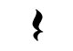
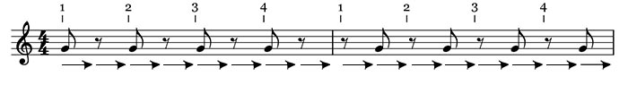
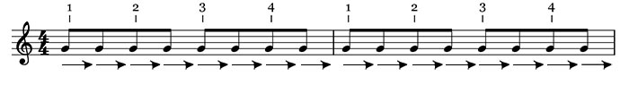
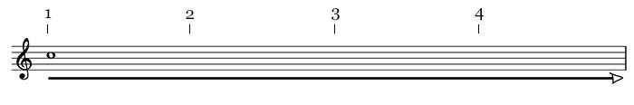
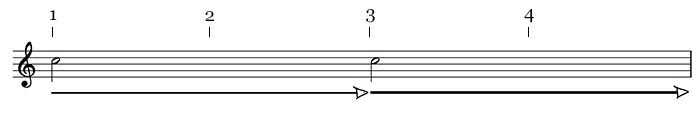
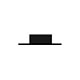
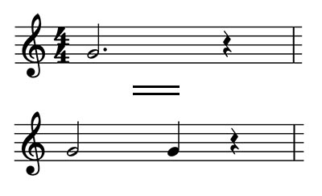
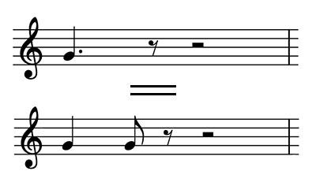

Rythme (1ère partie)
- Le rythme
- Le temps ou pulsation
- Le tempo
- Valeurs des notes et silences : ronde, blanche, noire, croche
- Valeurs des notes et silences : doubles croches
- Le point
- Equivalence avec fractions
- Signature rythmique
1. Le rythme
C'est l'organisation des événements musicaux dans le temps, les notes et les silences.
2. Le temps ou pulsation
C'est l'unité qui nous permet de mesurer la durée.
Plus simplement, c'est la pulsation que l'on ressent naturellement en écoutant un morceau.
Très souvent, le temps est égal à la noire (mais peut aussi être égal à la ronde, croche ou double croche).
Exemple avec une musique
3. Le tempo
C'est la vitesse d'exécution d'une oeuvre, d'un morceau.
Par convention, on prend la minute comme référenciel. Un tempo de 70 veut dire que l'on divise la minute en 70. L'unité du tempo est donc le battement par minute (BPM).
Si un morceau se joue à 60, cela veut dire qu'il y aura 60 battements par minute donc 1 temps sera égal à une seconde.
Si un morceau se joue à 120, cela veut dire qu'il y aura 120 battements par minute donc 1 temps sera égal à une demi seconde.
Lien entre tempo et émotion
On va, par exemple, exprimer la tristesse sur un tempo lent, la joie sur un tempo rapide...
4. Valeurs des notes et des silences : ronde, blanche, noire, croche
Noire et soupir
La noire dure 1 temps.
Le silence ou soupir est l'equivalent de la noire en silence. C'est un silence qui dure 1 temps.
Exemple :
Croche et demi-soupir
La croche dure 1/2 temps.
Son équivalent en silence est le "demi-soupir".

Deux croches

Ronde et pause
La ronde dure 4 temps.

La pause est l'équivalent de la ronde en silence. C'est un silence qui dure 4 temps.
C'est la valeur la plus grande, on met la barre en haut.
Exemple :
Blanche et demi-pause
La blanche dure 2 temps.

La demi pause est l'équivalent de la blanche en silence. C'est un silence qui dure 2 temps.
On met la barre en bas.
Exemple :
Récap ronde, blanche, noire et croches.
5. Valeurs des notes et des silences : doubles croches
Doubles croches
Récap notes
Récap silences
6. Le point
Le point rajoute la moitié de la valeur de la note à laquelle il est ajouté.
Exemple :
Une blanche pointée vaut une blanche + une noire.
Une noire pointée vaut une noire + une croche.
7. Equivalents global avec fractions
La ronde est la note la plus grande. On la note 1.
Pour avoir une blanche, on divise la ronde en 2 : 1/2.
Pour avoir une noire, on divise la ronde en 4 : 1/4.
Pour avoir une croche, on divise la ronde en 8 : 1/8.
Pour avoir une double croche, on divise la ronde en 16 : 1/16.
8. Signature rythmique
C'est le groupe de 2 chiffres au début de la partition.
Elle nous indique quelle est la valeur du temps et le nombre de temps dans une mesure.
- Le chiffre du bas nous indique quelle note vaut un temps. (cf. tableau du dessus)
- Le chiffre du haut nous indique combien de temps on trouvera dans une mesure.
Exemple :
Dans cet exemple, cela veut dire que l'on aura 4 noires dans une mesure.